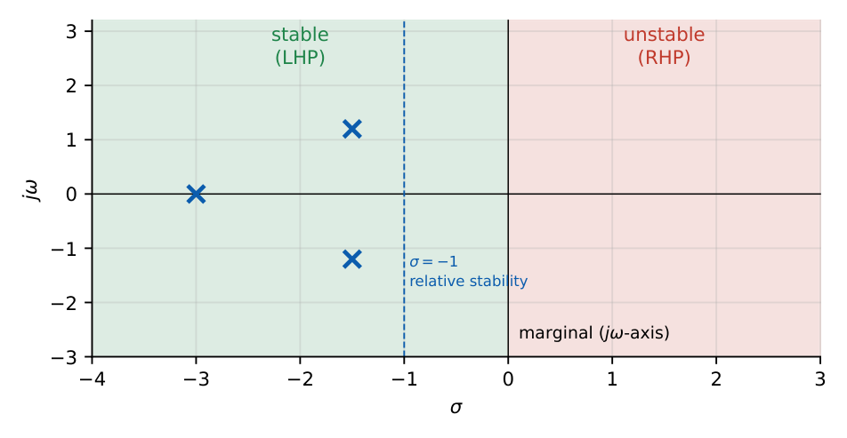
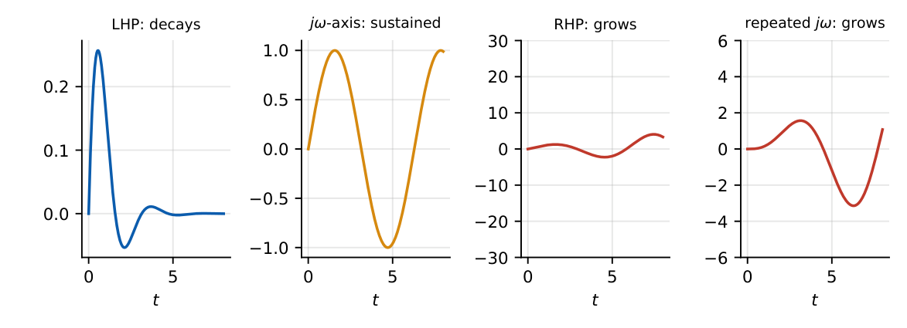

Stability of Control Systems
In this chapter
Definition of stability from pole locations, BIBO vs asymptotic vs marginal stability, necessary conditions on the characteristic polynomial, relative stability. Conceptual 1-mark questions, plus a foundation for Routh, root locus and Nyquist.
11.1 Core concept
A linear system is stable if its natural (zero-input) response decays to zero from every initial state; equivalently, all poles of the closed-loop transfer function (roots of the characteristic equation \(1+G(s)H(s)=0\)) lie in the open left half plane.

| Class | Pole condition | Impulse response |
|---|---|---|
| Asymptotically stable | all poles in LHP | \(\to0\) |
| Marginally stable | simple poles on \(j\omega\) axis, rest in LHP | bounded, oscillates (or constant) |
| Unstable | any RHP pole, or repeated \(j\omega\) poles | grows without bound |

11.2 BIBO stability
BIBO stable \(\iff\int_0^\infty|h(t)|\,dt<\infty\iff\) all poles of \(G(s)\) (after cancellation) in the open LHP.
A marginally stable system (e.g. \(1/s\), \(1/(s^2+1)\)) is not BIBO stable: a bounded input at the resonant frequency (or a step for the integrator) gives an unbounded output.
11.3 Necessary conditions
For \(a_ns^n+\cdots+a_0=0\) to have all roots in the LHP: (i) all coefficients present (none zero) and (ii) all of the same sign. These are necessary, not sufficient for \(n\ge3\); sufficiency is settled by the Routh–Hurwitz test (Chapter 12). For \(n=2\) they are also sufficient.
\(s^2+as+b\) has roots \(\dfrac{-a\pm\sqrt{a^2-4b}}{2}\). Both have negative real part iff \(a>0\) and \(b>0\): sufficient for \(n=2\).
Relations from the coefficients (Vieta) for \(s^n+a_{n-1}s^{n-1}+\cdots\): sum of roots \(=-a_{n-1}\); product \(=(-1)^na_0\). If \(a_{n-1}<0\), at least one root has positive real part.
11.4 Relative stability
Absolute stability asks whether the poles are in the LHP; relative stability asks how far: the distance of the closest pole to the \(j\omega\) axis (settling time), the damping ratio, and (in frequency domain) gain and phase margins. To test whether all roots lie to the left of \(s=-\sigma_0\), substitute \(s=z-\sigma_0\) and apply Routh to the polynomial in \(z\).
11.5 Examples
(a) \(G=\dfrac{1}{(s+1)(s+2)}\): stable. (b) \(\dfrac{s}{s^2+4}\): marginal, not BIBO stable. (c) \(\dfrac{1}{s^2(s+1)}\): unstable (double pole at \(0\)). (d) \(\dfrac{1}{(s^2+1)^2}\): unstable (repeated \(j\omega\) poles). (e) \(\dfrac{s-1}{(s-1)(s+2)}\): transfer function stable, but an unstable internal mode is hidden.
\(s^3+2s^2-s+3\): a negative coefficient \(\Rightarrow\) unstable. \(s^4+s^3+s^2+s+1\): all positive but not sufficient (Routh needed).
\(s^3+6s^2+11s+6=(s+1)(s+2)(s+3)\): stable; poles \(-1,-2,-3\), so all lie to the left of \(\sigma=-0.5\); with \(s=z-1\) it becomes \(z(z+1)(z+2)\): one root at the boundary, so exactly \(\sigma=-1\).
Quick unstable test: any missing or negative coefficient. Quick stable test for \(n=2\): all coefficients positive. For a first-order factor \((s+a)\): stable iff \(a>0\).
(i) Marginal stability is not BIBO stability. (ii) A pole on the \(j\omega\) axis of multiplicity \(\ge2\) is unstable. (iii) All positive coefficients do not guarantee stability beyond second order. (iv) BIBO is defined on \(G(s)\) after cancellation; internal stability needs the characteristic polynomial. (v) Stability of the open loop does not imply closed-loop stability and vice versa.
Q1. \(s^3+3s^2+2s+K\): the necessary condition for stability is (A) \(K>0\) (B) \(K<0\) (C) \(K=0\) (D) none.
Q2. A system with a simple pole at \(s=0\) and others in the LHP is (A) stable (B) marginally stable (C) unstable (D) BIBO stable.
Q3. A system is asymptotically stable iff all closed-loop poles are (A) in the RHP (B) on the \(j\omega\) axis (C) in the open LHP (D) real.
Answers: Q1 (A). Q2 (B). Q3 (C).
Q4. Which is BIBO stable? (A) \(\dfrac{1}{s(s+1)}\) (B) \(\dfrac{s+1}{s^2+1}\) (C) \(\dfrac{s-2}{(s+2)(s+3)}\) (D) \(\dfrac{1}{s^2-1}\).
Q5. \(s^2+(K-3)s+2\) is stable for (A) \(K>0\) (B) \(K>3\) (C) \(K<3\) (D) all \(K\).
Answers: Q4 (C). Q5 (B).
Q6. Characteristic equation \(s^2+4s+13=0\): the distance of the poles from the \(j\omega\) axis is .
Q7. For \(s^2+as+9\) to be critically damped, \(a=\) .
Answers: Q6: roots \(-2\pm j3\), distance \(2\). Q7: \(a=2\sqrt9=6\).
Q8. A marginally stable system: (A) has simple \(j\omega\) poles (B) is BIBO stable (C) has bounded impulse response (D) can have a sustained oscillation.
Answers: Q8: (A), (C), (D).
A system has poles \(-1,-2\) and a zero at \(+3\) (non-minimum phase). It is stable; the RHP zero only shapes the response (initial undershoot in the step response) and does not affect stability.
T1. Is \(s^4+s^2+1\) stable? Justify using the coefficient test.
T2. Why is \(1/s\) not BIBO stable?
Answers: T1: no: the \(s^3\) and \(s\) coefficients are zero. T2: a unit step input gives the ramp, unbounded.
- Stable \(\iff\) all poles in the open LHP; marginal \(\iff\) simple \(j\omega\) poles; unstable otherwise.
- BIBO: \(\int|h|<\infty\); marginal \(\Rightarrow\) not BIBO stable.
- Necessary: all coefficients same sign, none missing; sufficient for \(n=2\) only.
- Relative stability: shift \(s=z-\sigma_0\) and apply Routh.